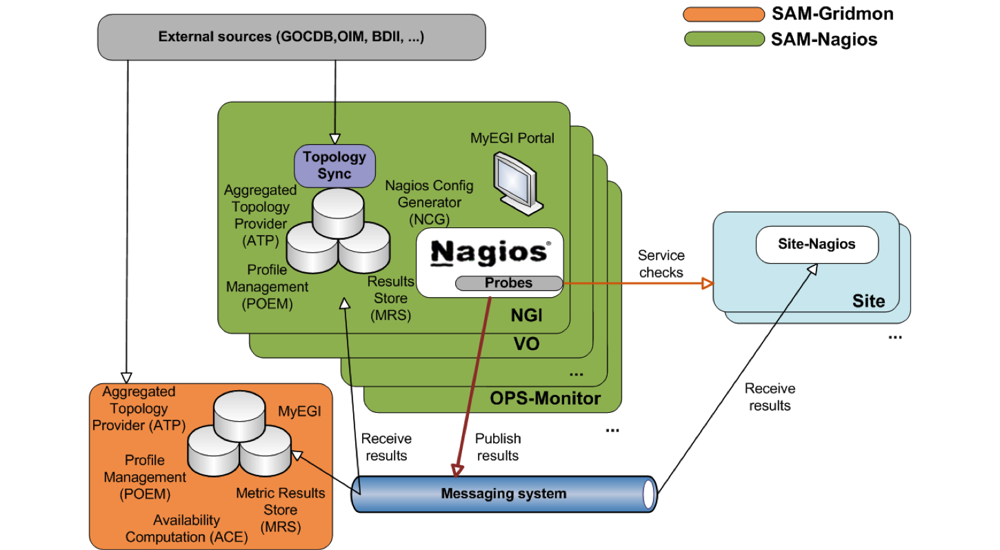

SAM is a system made up of several components, some commodity and some specifically designed and developed for SAM. These include Nagios to execute tests, Messaging to transport test results between components, databases to store both configuration information: the Aggregate Topology Provider (ATP) and the Profile Management Database (POEM), databases to store the test results produced by Nagios: the Metric Result Store (MRS). Other components such as the Availability Calculation Engine (ACE) processes the raw test results to calculation metrics such as site and service availability and reliability. A portal, MyWLCG or MyEGI is provided to visualize both test results and availability calculations.

In a production deployment these components are distributed over a set of machines. For instance, in the EGI.eu project each National Operations Team deploy their own Nagios instance to launch tests for the sites they are responsible for. These results are sent over messaging to central database components in order to calculate metrics at the project level.
Architecture
|
ACE is the calculation engine used for availability and reliability calculations. Starting from metric results stored in the central database ACE computes statuses, availabilities, and reliabilities for services, service flavours, and sites. ATP provides topology information by aggregating grid topology information and downtimes from different external sources (GOCDB, OIM, CIC, BDII, GSTAT, feeds) POEM describes existing metrics and groups them in profiles in order to run tests. Ir replaces the former MDDB component. MRS stores metric output and computes service statuses/ It provides views of data such as site and service status, availability and reliability |
MyWLCG/MyEGI is the main visualization tool to present a grid-aware view of the data collected by the Service Availability Monitoring framework. Nagios is the heart of SAM. It schedules tests and forwards via messaging the test results to various components which require them, such as the central metric Store and the MyEGI portal. Probes are contributed by many developer and system managers and are used to test the specific grid services. Messaging Apache ActiveMQ is used as an integration framework, adding flexibility, reliability and scalability to the distributed SAM monitoring system. |
{kind=link}
{kind=link}